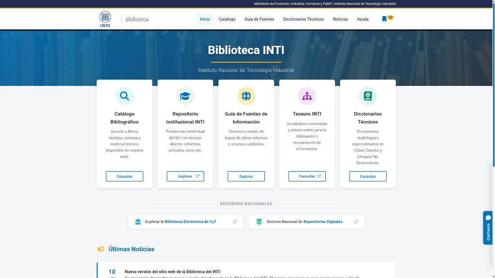
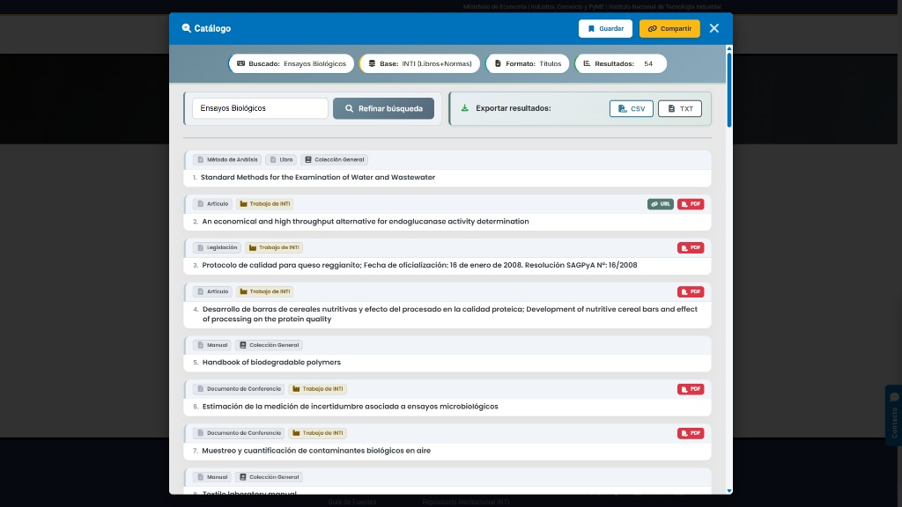
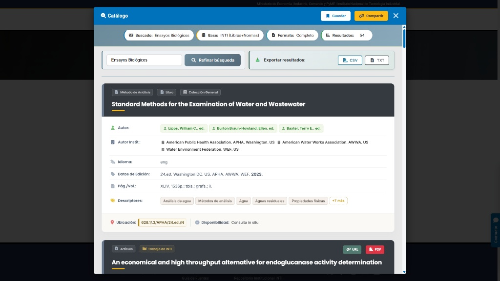

Information Architect & Systems Developer
Bridging the Gap Between
Legacy Data and
Modern Architecture.
Especialista en la reingeniería de sistemas de datos complejos. Construyo puentes entre infraestructura legacy (ISIS, WXIS, Apache) y estándares web modernos — automatizando metadatos y entregando interfaces eficientes.
01. Featured Project
INTI Library System Modernization



Reingeniería & Automatización
Biblioteca Central INTI
www-biblio.inti.gob.ar/prueba/ ↗El Problema
Sistema web legacy construido sobre bases ISIS y scripts WXIS sin documentación. La lógica de búsqueda estaba dispersa en archivos .xis y formatos ISIS, operando como silos inaccesibles para la web moderna.
Engineering Approach
- Auditoría e ingeniería inversa de scripts
.xisy archivos.fdtde cada base de datos - Reescritura completa de los 5 scripts de búsqueda y exportación del sistema (
simple.xis,avanzada.xis,descriptor.xis,registrounico.xis,export.xis) - Extracción del tesauro → normalización a JSON → sistema de sugerencias en tiempo real
- Búsqueda avanzada multi-campo con limpieza de caracteres para mejorar el recall
- SEO técnico y security hardening en servidor Apache
Funcionalidades Entregadas
- Guardar y compartir búsquedas via URLs persistentes
- Exportación de resultados a CSV y TXT
- Paginación moderna con selector numérico de página
- Registros bibliográficos rediseñados, responsivos y accesibles
- Interconexión entre Diccionarios Técnicos y catálogo bibliográfico
02. Core Capabilities
Stack & Skills
Data Engine
ISIS / WXIS Scripting
Modelado y reescritura de scripts .xis y archivos .fdt para motores de búsqueda bibliográficos legacy.
Standards
RDA / MARC21 / AACR2
Normalización internacional de metadatos bibliográficos. Tesauros, descriptores y vocabularios controlados.
Modern Stack
HTML5 / CSS3 / JS / JSON
Construcción de SPAs e interfaces responsivas. Vibe coding con Claude y Gemini como multiplicadores de entrega.
Infrastructure
Apache / SEO / Security
Gestión de servidores WAMP/Apache. Security hardening, headers y optimización para buscadores.
03. Professional Profile
About Me
Mi perfil es inusual en el mercado tech, y ese es exactamente mi mayor valor. Cuento con dos títulos de grado por la Universidad de Buenos Aires (UBA) — en Historia y en Bibliotecología y Ciencia de la Información — que me dieron algo que la mayoría de los developers no tiene: rigor metodológico para estructurar volúmenes masivos de datos complejos.
Trabajo en la Biblioteca Central del INTI, donde tomé un sistema web legacy que nadie quería tocar, lo entendí desde los cimientos mediante ingeniería inversa, y lo reconstruí completamente: reescribí scripts de búsqueda, modifiqué bases de datos y llevé la interfaz a estándares modernos.
Utilizo IA (vibe coding con Claude y Gemini) como multiplicador de velocidad de entrega. El resultado no es conceptual: vive en producción y es usado por investigadores del INTI todos los días.
Educación & Certificaciones